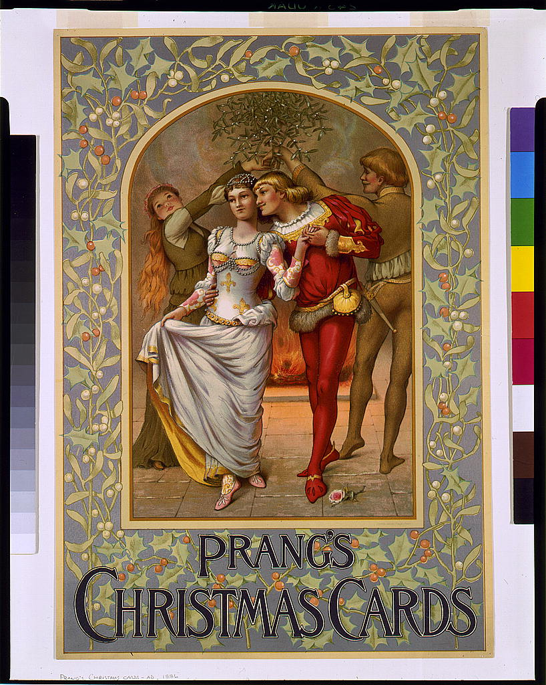

4. Blokea: Victoria Aroko Diseinua

Louis Prang-en gabonetako kromolitografia.
XIX. mendeko diseinuaren loraldi apaingarria eta koloretsua ulertzeko, ezinbestekoa da garaiko testuinguru industrialari erreparatzea. Alde batetik, ekoizpen masiboak objektu dekoratuak eskuragarriago egin zituen; bestetik, ordea, estatus soziala erakusteko premia sortu zen. Horren haritik, Owen Jonesek funtsezko papera jokatu zuen The Grammar of Ornament (1856) lanarekin. V&A-ko iturriek adierazten dutenez, liburu honek mundu osoko apaingarri-estiloak bildu zituen, baina ez kopiatzeko helburuarekin, baizik eta diseinuaren oinarrizko lege geometriko eta zientifikoak aztertzeko. Jonesen tesiari jarraiki, apaingarria ez zen azaleko gehigarri bat, arkitekturaren eta egituraren luzapen harmoniatsu bat baizik. Eragin horrek apaingarriekiko zaletasun handia piztu zuen, koloreen eta formen arteko oreka teorikoa finkatuz hiru kolore nagusien (gorria, urdina eta horia) erabileraren bidez.
Ildo beretik, teknologiaren aurrerapenak, eta bereziki kromolitografiak, iraultza estetiko hori bultzatu zuen. Teknika hau litografiaren oinarrizko printzipioan datza, hots, olioa eta ura nahasten ez direla dioen lege kimikoan. Prozesu horri esker, kolore askotako irudiak modu merkean inprimatzea lortu zen, nahiz eta harri bakoitzaren doikuntza (registration) teknikoki oso konplexua izan. Zentzu horretan, Louis Prang nabarmendu zen AEBetan; kromolitografia perfekzionatu zuen eta, horri esker, Gabonetako txartelak masiboki ekoizten hasi zen. Berrikuntza honek kolorea herritar guztien etxeetara eraman zuen, ordura arte eliteen eskura zegoen artea demokratizatuz eta hiri-paisaia kolorez betetako iragarkiz josi zuen.
Azkenik, eta aurrekoarekin lotuta, haur-liburuen ilustrazioak ere erabateko eraldaketa jasan zuen Walter Crane, Randolph Caldecott eta Kate Greenaway hirukoari esker. British Library-ko ikerketek nabarmentzen dutenez, autore hauek liburua artelan integral gisa ulertzen hasi zirela, Edmund Evans grabatzailearen laguntza teknikoari esker. Cranek diseinuaren zehaztasuna, lerro beltz indartsuak eta japoniar estiloaren eragina ekarri zituen; Caldecottek, berriz, mugimendua eta ekintza txertatu zituen marrazkietan, testuaren osagarri narratibo bihurtuz eta "picture book" modernoaren oinarriak ezarriz. Greenawayk, bere aldetik, haurtzaroaren ikuspegi idealizatu eta estetiko bat eskaini zuen, bere garaiko moda eta gustuetan eragin sakona izateraino. Laburbilduz, hirurok batera haur-ilustrazioaren "Urrezko Aroa" funtsatu zuten, irudia kontakizunaren muinean jarriz.